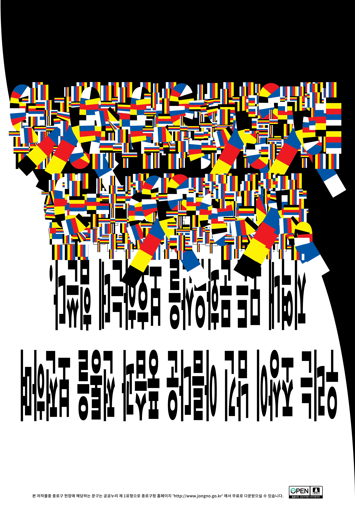

Registrant poster for Euljiro uprising Contest.
Dozens of store owners and artists staged a rally, urging the Seoul Metropolitan Government to scrap its redevelopment plan in the Euljiro area of downtown Seoul and designate it as a special zone for manufacturers and artists.
Euljiro is considered one of the most traditional areas in Seoul. I used Korean traditional color and shape. and after, I reversed, distorted the text to show the paradox.
Client: Self- Initiated project
Type of work: Poster